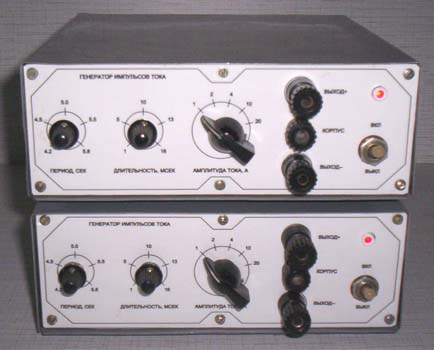
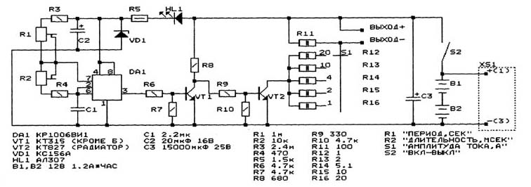
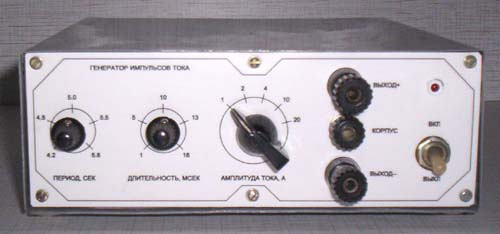
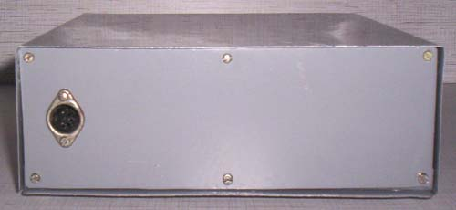
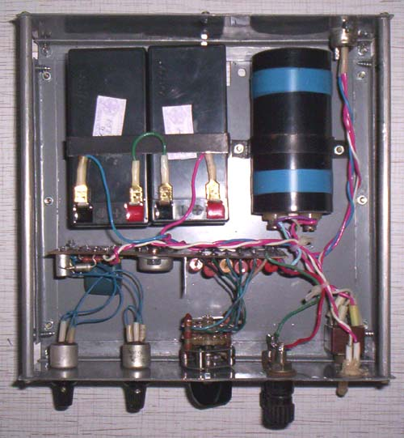

Генератор импульсов тока в низкоомной нагрузке
(амплитуда до 20 А, частота 0.2 Гц, длительность до 16 мсек)

Генератор разработан для проведения технологических опытов, в которых требуется создавать периодические импульсы тока амплитудой единицы - десятки ампер в нагрузке, сопротивление которой близко к нулю. Кроме того, он может применяться при испытании электромагнитных и магнитоэлектрических ударных приводов, в импульсных источниках света. Для предотвращения электромагнитных помех генератор собран в металлическом корпусе, выполняющем роль экрана, а в качестве источника питания использована аккумуляторная батарея, периодическая подзарядка которой может осуществляться зарядным устройством [3]. Электрическая принципиальная схема генератора приведена на рис. 1.

Рис. 1. Электрическая принципиальная схема генератора импульсов тока.
На интегральном таймере DA1 собран задающий генератор с регулируемыми параметрами импульса [1, 2]. Регулировка осуществляется переменными резисторами R1 (регулируется период следования импульсов от 4.2 до 5.8 секунд) и R2 (регулируется длительность импульса от 1 до 16 миллисекунд). Для питания задающего генератора используется параметрический стабилизатор напряжения VD1R5C2. Светодиод HL1 служит индикатором включения прибора. К выходу таймера DA1 подключен инвертор VT1, управляющий усилителем мощности VT2. С помощью переключателя S1 посредством выбора токоограничивающего резистора (R12 - R16) осуществляется регулировка амплитуды тока в низкоомной нагрузке. Конденсатор C3 используется в качестве буфера для сглаживания токовой нагрузки на аккумуляторную батарею. Нагрузка подключается к клеммам "ВЫХОД+" и "ВЫХОД-", находящимся на передней панели генератора. Разъем XS1, расположенный на задней панели прибора, служит для подзарядки аккумуляторной батареи с помощью внешнего зарядного устройства или питания внешних устройств от аккумуляторной батареи генератора. Электрические цепи генератора не имеют контакта с корпусом прибора. Для заземления корпуса используется отдельная клемма "КОРПУС".
Генератор собран в корпусе размером 200 х 200 х 70 мм3. Масса прибора не более 2.6 кг. Внешний и внутренний вид генератора показан на рис. 2 - 4.

Рис. 2. Генератор импульсов тока: вид спереди.

Рис. 3. Генератор импульсов тока: вид сзади.

Рис. 4. Генератор импульсов тока: вид изнутри.
Ссылки:
08.10.2007
Альтернативные источники
энергии
Компьютеры и
Интернет
Магнитные поля
Механотронные системы
Перспективные
разработки
Электроника и технология